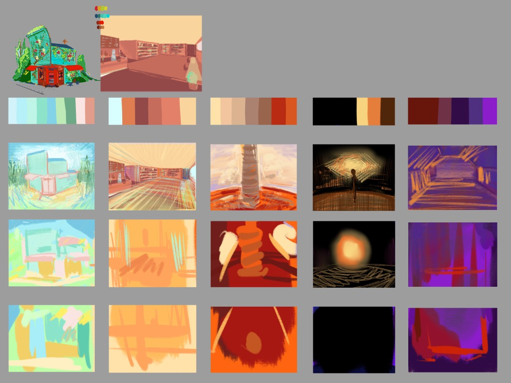

Selected work
Procedural Poetry Funhouse
Design for immersive VR poetry experience—interaction systems, interface language, and comfort-focused navigation in Unreal Engine 5. Modeling, rigging, and animation for interactive guidance Cat.

Overview
Immersive VR experience inspired by Judith Copithorne’s visual poetry. As UX/UI designer, I defined interaction systems and interface language for a multi-year research project, collaborating with artists, researchers, and developers.
The problem
The team migrated to a new development platform mid-project, so existing interactions could not carry over. I redesigned the interaction flow, information architecture, and reusable UI components to support long-term expansion—not just recreate the old prototype.
Comfort in VR
Early tests showed motion sickness during exploration. I researched locomotion guidelines, adjusted movement speed and visual anchors, and simplified controls so users could stay with the poetry. Comfort improved without losing the surreal atmosphere.
Outcome
Across roughly twelve months, the work established a scalable UX foundation for interdisciplinary VR research—balancing artistic vision, technical limits, and user needs.
Emotion Design
Color and light studies for each level atmosphere in the Poetry VR experience.

My role
- Defined overall UX direction, interaction design, and interface system
- Redesigned interaction flow and reusable UI components after a full platform migration
- Researched and iterated locomotion to reduce VR motion sickness
- Collaborated closely with artists, researchers, and developers across ~12 months
- Established a scalable design foundation for a multi-year funded research project